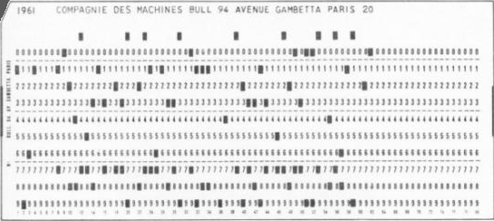

En ligne avec l'Agile
Créé avec ♥ en novembre 2020
F pour le fullscreen et S pour les speakernotes
Qui sommes-nous ?
1 minute pour trouver un objet qui va vous aider à vous présenter :
nom, fonction, connaissance de l'agilité et pourquoi cet objet

Plan
- Histoire de l'Agile
- Un atelier plein de principes
- La suite de l'histoire
- Pause
- Un sprint Scrum
- Interrogation
Un peu d'histoire
D'où vient le mouvement agile ?
Pourquoi ce mot ?
Les débuts du logiciel
Par définition, l'histoire du logiciel est indissociable de l'histoire de l'ordinateur et pourtant ...

L'histoire du logiciel débute en 1968
En octobre l'OTAN organise la première conférence consacrée au développement logiciel à Garmisch en RFA. On y parle crise du logiciel.

La crise devient chaos
Le Standish Group publie en 1995 le premier Chaos Report
“Software development projects are in chaos, and we can no longer imitate the three monkeys -- hear no failures, see no failures, speak no failures.”
- 250 milliards de $ dépensés par an aux USA
- Seuls 16,2% des projets sont on-time et on-budget
Industrialiser
On s'inspire du Taylorisme qui a fait ses preuves dans l'industrie et qui divise le travail selon 2 axes.
Atelier plein de Principes
Le manifeste présente 12 principes agiles.
Agile maintenant
Où va le mouvement agile ?
C'est quoi le futur ?
Pause
Scrum
Focus sur LE framework agile.
Sprint Planning
.
Développement
.
Sprint Review
.
Rétrospective
.
Quiz
.